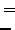
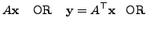
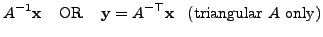

|  |  | ||
|  |
Gan_Vector4 v4x;
Gan_Vector3 v3y;
Gan_Matrix34 m34A;
/* ... set up m34A and v4x ... */
gan_mat34_multv4_q ( &m34A, &v4x, &v3y ); /* macro, or */
v3y = gan_mat34_multv4_s ( &m34A, &v4x ); /* function call */
while if
Gan_Vector3 v3x;
Gan_Vector4 v4y;
Gan_Matrix34 m34A;
/* ... set up m34A and v3x ... */
gan_mat34T_multv3_q ( &m34A, &v3x, &v4y ); /* macro, or */
v4y = gan_mat34T_multv3_s ( &m34A, &v3x ); /* function call */
There are similar routines gan_mat33_multv3_[qs]() and
gan_mat33T_multv3_[qs]() for
Gan_Vector3 v3x, v3y;
Gan_SquMatrix33 sm33S;
/* ... set up sm33S using e.g. gan_symmat33_fill_q(), and v3x ... */
gan_symmat33_multv3_q ( &sm33S, &v3x, &v3y ); /* macro, or */
v3y = gan_symmat33_multv3_s ( &sm33S, &v3x ); /* function call */
In the case that matrix
Gan_Vector3 v3x, v3y;
Gan_SquMatrix33 sm33L;
/* ... set up sm33L using e.g. gan_ltmat33_fill_q(), and v3x ... */
/* multiply vector by lower triangular matrix */
gan_ltmat33_multv3_q ( &sm33L, &v3x, &v3y ); /* macro, or */
v3y = gan_ltmat33_multv3_s ( &sm33L, &v3x ); /* function call, or */
gan_ltmat33_multv3_i ( &sm33L, &v3x ); /* macro, in-place in v3x */
/* multiply vector by upper triangular matrix */
gan_ltmat33T_multv3_q ( &sm33L, &v3x, &v3y ); /* macro, or */
v3y = gan_ltmat33T_multv3_s ( &sm33L, &v3x ); /* function call, or */
gan_ltmat33T_multv3_i ( &sm33L, &v3x ); /* macro, in-place in v3x */
/* multiply vector by inverse of lower triangular matrix */
gan_ltmat33I_multv3_q ( &sm33L, &v3x, &v3y ); /* macro, or */
v3y = gan_ltmat33I_multv3_s ( &sm33L, &v3x ); /* function call, or */
gan_ltmat33I_multv3_i ( &sm33L, &v3x ); /* macro, in-place in v3x */
/* multiply vector by inverse of upper triangular matrix */
gan_ltmat33IT_multv3_q ( &sm33L, &v3x, &v3y ); /* macro, or */
v3y = gan_ltmat33IT_multv3_s ( &sm33L, &v3x ); /* function call, or */
gan_ltmat33IT_multv3_i ( &sm33L, &v3x ); /* macro, in-place in v3x */
Error detection: If implicit inverse is used (the ...I_multv...() or ...IT_multv...() routines), the matrix must be non-singular, which for triangular matrices means that none of the diagonal elements should be zero. If the matrix was produced by successful Cholesky factorisation of a symmetric matrix (see Section 3.1.2.12) the matrix is guaranteed to be non-singular. This is the normal method of creating a triangular matrix, and Gandalf uses assert() to check for the singularity of the matrix.